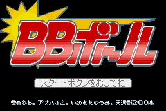

BB Ball (Japan)
SRAM 256K Save Format Spec gbakit Built-In Debug Menu Patch 💾 MultiBoot 🎮 4P Link
Cartridge Identity
- Game Code
A8LJ(FamilyA8L)- Header Title
BBBALL- Maker / Revision
GF/ rev0- ROM Size
- 8.0 MiB (8,388,608 B)
- Save Media
SRAM 256K- SHA-256
a0f2ec393d391ab7d6fb704c139a08d9dd4e3a3d8d152ef3cb96c34fee769a28- Engine / SDK Group
comm-001(196 families)
Screenshots


Debug Menu Re-Enablement Patch (.ips)
Download A8LJ-debug.ips (15 B IPS / 2 B delta)
- Hook Mechanism
thumb_imm_scene_override· Override initial mode selector at 0x00038e (movs r0, #1 -> movs r0, #0) to boot directly into Mode 0 DEBUG MENU (MAP 0800 / OBJ TEST / BGM / SE / BATTLE)- IPS SHA-256
3afb40e5a4f97e1db2163ac21f086e4705f2aa38747e51cf0384a6c527791613
gbakit patch apply A8LJ-debug.ips original.gba patched-debug.gba

Link Cable & Multiplayer Communications
This title contains detected communication capabilities: 💾 MultiBoot 🎮 4P Link.
Detailed protocol specifications, SIO registers, Joybus commands, and MultiBoot sequences are documented in the Link & Multiplayer Reference.
- Multi-Player SIO (4P)
- 16-bit ring network · SIOCNT (
0x04000128) literals:0x03afe8,0x03b17c,0x03b1d8· SIODATA32/SIOMULTI0 (0x04000120) literals:0x03b1d0 - Single-Cart MultiBoot
- Single-Cartridge MultiBoot (Download Play) client/server handler · Thumb SWI 0x25 (
0xDF25):0x0d4e7c,0x0d7504,0x0eb4c2,0x12b21e
Battery Save Format Specification
Open Full Save Format SpecDownload save-format.json
- Specification Coverage
- 3 mapped fields · 0 verified checksum(s) · Confidence: HIGH
- gbakit Built-In Support
- Built-in (A8LJ)
gbakit save verify A8LJ save.sav
gbakit save decode A8LJ save.sav
gbakit save fix A8LJ damaged.sav -o repaired.savObserved Battery Save Layout
- Fill Byte & Active Size
0xFFfill · 20–20 / 32,768 B active (entropy 0.72 bits/B)- Active Offset Ranges
0x0–0x3,0x6,0xA44–0xA47,0xA4A,0x1488–0x148B,0x148E,0x1ECC–0x1ECF,0x1ED2(8 total)- ASCII Magic / Headers
- None detected
- Observed Variable Regions
- 0 bytes across 0 spans: None
- Candidate Checksum/Counter Spans
- None
ROM Assets, Compression & Audio
- BIOS Compression
- LZ77 (
0x10): 174 streams · RLE (0x30): 0 streams - ROM Pointer Tables
- 37 tables (0 pointing to validated compressed streams)
- SDK Backup Tags
SRAM_F_V103
Text, Fonts & Scene Data
- Primary Text Encoding
- Shift-JIS (uncompressed) (
22ASCII strings ·200Shift-JIS runs) - Font & VWF Indicators
- VWF Width Table 1bpp Font · BIOS SWIs: BitUnPack
0x10:12· LZ770x11/12:19· Huffman0x13:6· RLE0x14/15:22 - Scene & Packaging
12ROM pointer tables (≥32 entries,1≥200) ·496relativeu32TOCs ·460OAM metasprite hits
Hardware MMIO Subsystems
save_bus_sram_flash0x800ad60